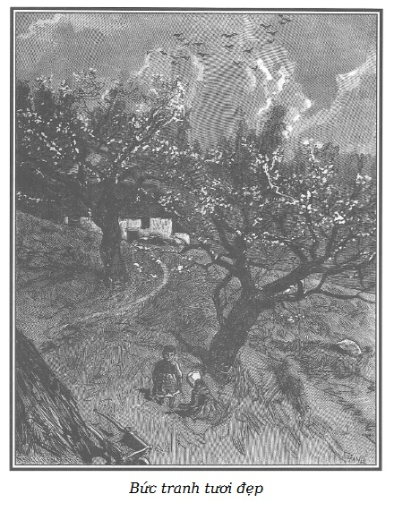

Marie cố trấn tĩnh sự xúc động do tâm sự u buồn của bạn mình gây ra, rụt rè nói:
– Chị nghe em, đừng giận nhé!
– Nói thế nào, tôi trò chuyện đã khá dông dài, thôi được, đây là lần cuối cùng chị em mình nói chuyện với nhau.
– Chị có sung sướng không, Sói Cái?
– Sao cơ?
– Về cuộc đời của chị?
– Ở đây ấy à, ở Saint-Lazare?
– Không, ở nhà, khi chị được tự do.
– Có, tôi sung sướng.
– Lúc nào cũng thế?
– Lúc nào cũng thế.
– Chị có muốn đổi số phận mình lấy một số phận khác không?
– Số phận nào nữa? Không có số phận nào khác với tôi.
Marie nói tiếp, sau một hồi yên lặng:
– Này, chị Sói Cái ơi, đôi khi chị có thích xây mộng không? Ở tù làm thế vui lắm!
– Xây mộng với ai mới được chứ?
– Với Martial.
– Người yêu của tôi?
– Vâng.
– Thật, tôi chưa bao giờ làm vậy.
– Để em mơ cho chị và cho Martial.
– Chà, được gì nào?
– Cho qua thì giờ.
– Nào, để xem cô mơ thế nào?
– Thử hình dung một sự tình cờ đôi khi vẫn xảy ra, chị gặp một người nói với chị: “Bị cha mẹ bỏ rơi từ thời thơ ấu, lại lâm vào một hoàn cảnh xấu như vậy, cô đáng thương hơn là đáng trách, đã trở thành…”
– Trở thành gì nào?
Marie dịu dàng trả lời:
– Trở thành như chị em ta. Giả sử người ấy còn nói: “Cô yêu Martial, anh ấy yêu cô, cả cô và anh ấy hãy từ bỏ một cuộc đời xấu xa, đáng lẽ là tình nhân với nhau thì nên là vợ chồng.”
Sói Cái nhún vai:
– Thử nghĩ anh ấy có muốn lấy tôi làm vợ không?
– Ngoài việc làm ăn trái phép, anh ấy có tội gì nữa không?
– Không, anh ấy đánh cá trộm trên sông, săn bắn trái phép trong rừng, và anh ấy làm đúng. Cá và thú rừng, ai bắt được là của người ấy. Có dấu hiệu nào của chủ?
– Này, thí dụ như anh ấy từ bỏ cái nghề nguy hiểm, đánh cá trộm trên sông, anh ấy muốn trở thành người hoàn toàn lương thiện. Thí dụ như bằng những ý định tốt, thật thà, thẳng thắn, anh ấy lấy được lòng tin của một vị ân nhân không biết mặt, cho anh ấy một việc làm như gác rừng chẳng hạn, hợp với sở thích của anh ấy, em nghĩ thế, vì anh ấy thích săn, cùng nghề mà lại lương thiện.
– Thật thế, vẫn là sống ở trong rừng.
– Nhưng người ta chỉ cho công việc ấy với điều kiện anh ấy làm lễ cưới và đem chị đi theo.
– Đi với Martial?
– Vâng, chị sẽ sung sướng, như chị từng nói, chung sống với nhau trong rừng. Đáng lẽ phải lẩn tránh như những tội phạm trong cái chòi khốn khổ của kẻ ăn trộm, chị có hẳn một nếp nhà nhỏ đàng hoàng, trong đó chị là người nội trợ chăm chỉ, đảm đang, như thế chẳng hơn à?
– Cô chế giễu tôi! Làm sao có thể được?
– Ai mà biết được? Ngẫu nhiên mà. Vả lại, đang xây mộng.
– Thế thì hay quá!
– Này nhé, Sói Cái! Em như thấy chị đang ở trong căn nhà nhỏ giữa rừng với chồng và hai hoặc ba con. Con cái! Hạnh phúc bao nhiêu, phải không?
Sói Cái hăng lên:
– Có con với anh ấy? Nếu thế thì rất tự hào, chúng sẽ được cưng biết mấy.
– Chúng sẽ bên chị trong cảnh cô đơn. Rồi lớn lên một chút, chúng sẽ giúp chị vô khối việc, những đứa nhỏ nhặt cành khô để đốt, thằng lớn nhất chăn một hoặc hai con bò cái trong rừng, nơi có cỏ, bò người ta thưởng cho anh ấy vì anh ấy làm việc giỏi. Bởi biết săn bắn trộm được thì gác rừng cũng giỏi.
– Thực ra, cũng đúng. Xây mộng cũng vui đấy! Sơn Ca, cô nói nữa đi.
– Mọi người sẽ ca ngợi chồng chị, rồi ông chủ sẽ ban thêm một vài ân huệ nữa: một sân nuôi gà vịt, một cái vườn, nhưng mà phải làm việc nhiều đấy, Sói Cái ạ, từ sáng đến chiều.
– Ồ, nếu chỉ có thế và được sống bên cạnh người yêu thì công việc chẳng làm tôi sợ đâu, cánh tay tôi khỏe thế này!
– Em cam đoan là chị tha hồ bận! Khối việc ra đấy! Sửa chuồng bò, chuẩn bị bữa ăn, may vá, hôm nay giặt là áo quần, mai nướng bánh hoặc quét dọn nhà cửa, từ trên xuống dưới, để các bác gác rừng phải khen: “Chẳng bà nội trợ nào bằng vợ Martial, trong nhà từ nóc xuống hầm sạch tinh, con cái chăm sóc cẩn thận. Bà Martial rõ đảm đang!”
Sói Cái kiêu hãnh nhắc lại:
– Nào Sơn Ca, đúng là tôi được gọi là bà Martial, bà Martial!
– Chắc là thích hơn gọi chị bằng tên Sói Cái phải không?
– Tất nhiên, tôi thích tên chồng tôi hơn là tên một con vật. Nhưng, nhưng, sinh ra là Sói Cái, tôi chết đi vẫn là Sói Cái!
– Biết đâu, biết đâu, không lùi bước trước một cuộc sống vất vả nhưng trong sạch, mang lại hạnh phúc… Chị không sợ làm việc chứ?
– Ồ, không. Không phải vì có chồng và ba hoặc bốn nhóc phải trông mà tôi quá vất vả đâu!
– Vả lại, không phải lúc nào cũng làm việc đâu, cũng có lúc nghỉ, mùa đông, sau bữa tối, bọn trẻ đi ngủ, chồng chị hút tẩu thuốc, lau súng hoặc vuốt ve mấy con chó, chị có thể được nghỉ ngơi.
– Nghỉ ngơi thoải mái, ngồi khoanh tay à? Không, tôi thích ngồi may vá ban đêm, cạnh lò sưởi. Chẳng mệt lắm! Mùa đông, ngày rất ngắn.
Lời nói của Marie làm Sói Cái quên dần hiện tại, mơ đến tương lai, cũng bị thu hút mạnh như Marie trước đây, khi Rodolphe nói với cô về những thú vui nơi thôn dã, ở trang trại Bouqueval. Sói Cái không che giấu những thích thú hoang dã mà người yêu của cô ta đã gợi ra. Nhớ lại ấn tượng sâu sắc, tốt lành từ những bức tranh quê tươi đẹp mà Rodolphe đã vẽ ra, Marie cũng muốn thử cách làm ấy với Sói Cái, suy nghĩ một cách sống gian lao, khổ cực, cô quạnh và lại ham muốn được sống như vậy thì người phụ nữ ấy đáng quan tâm và thương xót.
Vui vì được bạn mình tò mò chú ý lắng nghe, Marie mỉm cười nói tiếp:
– Này, bà Martial, chị cho phép em được gọi như vậy, chị thấy thế nào?
– Trái lại, tôi thấy thích. – Sói Cái nhún vai, mỉm cười. – Thật rởm, lại còn muốn làm bà! Có còn trẻ con nữa đâu! Thôi được, cô nói nữa đi… hay đấy!
– Thưa bà Martial, khi em nói về cuộc sống của chị, mùa đông trong rừng sâu, em chỉ mới nghĩ đến cái mùa tệ nhất.
– Không, không phải tệ nhất. Nghe gió rít ban đêm trong rừng và thỉnh thoảng nghe tiếng sói hú, rất xa, rất xa, tôi không thấy buồn chán, miễn là ở cạnh lò sưởi với chồng và các con của tôi, hoặc chỉ một mình, vắng chồng, khi anh ấy phải đi tuần tra… Ồ, cây súng chẳng làm tôi sợ đâu. Nếu phải bảo vệ các con, tôi rất vững tay. Nào, Sói Cái phải biết giữ sói con chứ!

.– Ồ, em tin chị. Chị can đảm lắm! Chị ấy mà… còn em thì nhút nhát, em thích mùa xuân hơn mùa đông. Ôi, mùa xuân, bà Martial, mùa xuân! Lá xanh, hoa rừng đẹp nở thơm, rất thơm, không khí sực nức mùi hương. Lúc đó các con chị sẽ lăn tròn vui vẻ trong cỏ non, rừng sẽ rậm lá đến nỗi khó thấy được căn nhà của chị. Hình như em thấy nó từ nơi đây. Trước cửa có một giàn nho anh nhà trồng, ngả bóng xuống thảm cỏ, nơi đó anh ấy nằm ngủ trưa giữa những ngày nóng bức, trong khi chị đi đi lại lại dặn lũ con đừng làm bố thức giấc… Không biết chị có chú ý điều này không. Giữa mùa hè và đúng ngọ, trong rừng cũng yên lặng như ban đêm, không một tiếng lá động đậy, một tiếng chim hót…
– Đúng thế. – Sói Cái lại như cái máy, quên mất hiện thực, tưởng như thấy trước mắt những bức tranh tươi sáng mà trí tưởng tượng nên thơ của Marie đã vẽ ra, bản tính vốn say mê vẻ đẹp thiên nhiên.
Vui sướng vì sự chú ý sâu sắc của bạn, Marie cũng bị cuốn theo sức mạnh những ý nghĩ của mình:
– Có một thứ em cũng yêu gần như yêu sự yên lặng trong rừng sâu, đó là tiếng những giọt mưa mùa hè nặng rơi trên lá, chị có yêu nó không?
– Có, tôi cũng rất yêu mưa hè.
– Đúng không? Khi tất cả cây, rêu, cỏ đẫm nước, một mùi thơm mát, tinh sạch! Rồi mặt trời soi qua các tán cây làm lấp lánh các giọt nước nhỏ đọng ở mép lá sau cơn mưa! Chị có chú ý đến điều đó không?
– Có, nhưng hôm nay cô nói thì tôi mới nhớ ra. Kỳ thật! Sơn Ca, cô kể hay lắm, cứ như thấy được tất cả trong khi cô nói…. Chà, làm sao nói cho cô hiểu được. Nhưng này, những điều cô nói, nó thơm, nó mát như trận mưa hè vậy.
Vậy đó, cũng như cái đẹp, cái tốt, cảm xúc nên thơ cũng hay lây lan.
Sói Cái, bản chất thô bạo, đã hoàn toàn chịu ảnh hưởng của Marie.
Marie mỉm cười nói tiếp:
– Đừng nghĩ rằng chỉ chúng ta mới yêu mưa hè. Cả loài chim nữa! Chúng khoan khoái rung cánh, hót vang lừng, cũng không vui bằng các con chị… Các bé tự do, vui và nhẹ nhõm như chim. Chị có thấy không, lúc chiều về, các cháu nhỏ nhất chạy xuyên rừng, đón anh của chúng đang đưa hai con bò cái tơ đi ăn cỏ về? Chúng đã nhanh chóng nhận ra tiếng chuông nhỏ leng keng từ xa…
– Này, Sơn Ca, hình như tôi thấy thằng nhỏ nhất và cũng là thằng táo bạo nhất đang nhờ thằng anh đỡ để cưỡi lên lưng một con bò cái…
– Tưởng chừng con vật biết mình đang chở ai nên nó bước đi thận trọng thế… Rồi đến bữa tối, thằng anh, trong khi đi chăn bò, vừa chơi vừa hái cho mẹ một thúng đầy dâu rừng vừa mới chín, chạy mang về ủ dưới một lớp hoa tím dại.
– Dâu và hoa tím, mới thật thơm! Nhưng trời hỡi, Sơn Ca, cô tìm đâu ra những ý nghĩ ấy?
– Trong rừng, dâu chín, hoa tím nở, chỉ việc tìm và hái thôi, bà Martial ạ. Nhưng hãy nói về công việc nội trợ. Đêm rồi, phải vắt sữa cho bò cái, sửa soạn bữa ăn tối dưới giàn nho. Vì chị đã nghe tiếng các con chó của chồng chị sủa. Tiếp đến là tiếng nói của chủ nhân, mặc dù mệt nhoài nhưng vẫn hát khi trở về nhà… Và làm sao không muốn hát khi, một chiều hè đẹp, lòng vui, người ta trông thấy ngôi nhà, trong đó có một người vợ tốt và hai đứa con đang ngóng đợi. Có phải không, bà Martial?
– Đúng, không làm gì khác ngoài việc hát. – Sói Cái nói, vẻ mặt càng trầm tư.
Marie cũng xúc động:
– Trừ phi người ta khóc vì xúc động. Và những giọt nước mắt ấy cũng ngọt ngào như tiếng hát. Rồi thì, khi đêm đã đến thật sự, hạnh phúc bao nhiêu khi được ngồi dưới giàn nho, thưởng thức vẻ trong lành của một tối đẹp trời, hương rừng, nghe lũ trẻ bi bô một câu kinh… Làm sao không cảm tạ tạo hóa đã cho ta hơi mát buổi chiều, hương rừng, ánh sáng dìu dịu của bầu trời sao? Sau lời cảm tạ hoặc câu kinh, người ta ngủ êm cho đến ngày mai và lại cảm tạ Đấng Sáng Thế bởi cuộc sống cần lao nhưng yên ổn và lương thiện ấy là cuộc sống hằng ngày…
– Cuộc sống hằng ngày, – Sói Cái nhắc lại, cúi đầu, mắt nhìn đăm đăm, ngực như tức thở – bởi vì thật thế, Chúa lòng lành cho chúng ta được sống hạnh phúc mà đơn sơ như vậy…
Marie dịu dàng nói tiếp:
– Này, có phải đáng ca ngợi như ta ca ngợi Chúa người nào có thể đem lại cho chị cuộc sống yên lành, cần lao thay vì cuộc sống khốn khổ chị phải kéo lê trong bùn nhơ trên các đường phố Paris?
Hai chữ Paris vụt kéo Sói Cái trở về thực tại.
Trong tâm hồn người này vừa mới diễn ra một hiện tượng lạ lùng.
Mô tả hồn nhiên một cuộc sống âm thầm và vất vả, câu chuyện đơn sơ ấy, khi được soi bởi ánh sáng êm dịu của tổ ấm gia đình, khi chói lên bởi vài tia nắng vàng rực rỡ, tắm mát trong gió nhẹ của rừng sâu hay ngan ngát mùi hương hoa dại, gây cho Sói Cái một ấn tượng sâu sắc hơn, mạnh mẽ hơn lời khích lệ của một đạo lý cao siêu.
Vâng, càng nghe Marie nói, Sói Cái càng muốn được làm một người nội trợ không biết mệt mỏi, một người vợ đảm, một người mẹ hiền tận tâm.
Gây được cho một người phụ nữ thô bạo, vô luân, đã bị sỉ nhục, dù chỉ trong phút chốc, có tình cảm gia đình, ý thức về bổn phận, yêu lao động, biết ơn Chúa Sáng Thế, và tất cả những thứ đó, chỉ bằng sự hứa hẹn những cái Chúa vẫn ban cho mọi người, mặt trời trên bầu trời, bóng mát của núi rừng… những thứ mà người lao động nào cũng có, một mái nhà và bánh mì, phải chăng đó là thắng lợi đẹp đẽ của Marie?
Nhà giáo dục, nhà đạo đức nghiêm khắc nhất, nhà thuyết lý cuồng nhiệt nhất, liệu có thu được nhiều kết quả hơn, với những lời tiên đoán đe dọa sự trả thù của con người và sấm sét của thần linh?
Sự giận dữ đau đớn mà Sói Cái cảm thấy khi trở về thực tại, sau khi bị mê hoặc bởi giấc mơ mới mẻ và tốt lành, mà lần đầu tiên Marie dắt dẫn vào, chứng tỏ cô đã có ảnh hưởng đến người bạn đáng thương.
Sự tiếc hận của Sói Cái, rơi từ ảo tưởng êm ái đến thực tại phũ phàng, kinh tởm, càng cay đắng bao nhiêu thì thắng lợi của Marie càng lớn bấy nhiêu.
Sau một hồi im lặng và suy nghĩ, Sói Cái vụt ngẩng đầu, xoa tay lên trán, đứng dậy, táo tợn và hung dữ:
– Thấy chưa, thấy chưa… Tôi hoàn toàn đúng khi tôi ngờ vực cô và không muốn nghe lời cô vì điều ấy sẽ không hay cho tôi. Cô nói với tôi như vậy để làm gì? Để chế nhạo tôi? Để quấy rầy tôi? Và chỉ bởi vì tôi đã quá ngu để nói ra rằng tôi thích sống trong rừng sâu với người yêu! Thế cô là ai? Tại sao lại đến làm đảo lộn tâm hồn tôi? Cô không biết cô đã gây ra điều gì, khốn kiếp! Bây giờ dẫu sao tôi vẫn phải nghĩ đến khu rừng ấy, căn nhà ấy, những đứa con ấy, đến cái hạnh phúc mà chẳng bao giờ tôi có… chẳng bao giờ! Và nếu tôi không quên được những lời cô nói, cuộc đời tôi sẽ là một cực hình, một địa ngục… Và như vậy, chỉ tại cô, vâng, chỉ tại cô…
– Càng hay! Vâng, càng hay. – Marie nói.
– Cô nói là càng hay à? – Sói Cái quắc mắt.
– Vâng, càng hay, bởi vì cuộc sống hiện tại đối với chị, cho đến nay, là địa ngục, chị sẽ thích cuộc sống mà em mô tả.
– Thích mà làm gì, nếu nó không thể là của tôi? Hối tiếc là gái điếm làm gì nếu phải chết là gái điếm?
Sói Cái càng giận dữ, siết chặt cổ tay bé nhỏ của Marie trong bàn tay to khỏe của mình:
– Trả lời, trả lời đi! Xui khiến tôi thích cái mà tôi không thể có, để làm gì?
– Thích một cuộc sống lương thiện và cần cù, chính là xứng đáng với cuộc sống ấy, em đã nói với chị như vậy. – Marie nói tiếp, không tìm cách gỡ bàn tay ra.
– Nào, xứng đáng rồi thì được gì nào? Hơn gì nào?
– Được thấy điều mà chị coi như giấc mơ trở thành hiện thực. – Marie nói, giọng nghiêm chỉnh, đầy sức thuyết phục, khiến Sói Cái lại bị chinh phục, bỏ rơi bàn tay của Marie ra, sững sờ vì ngạc nhiên.
– Nghe em, chị Sói Cái ạ! – Marie tiếp lời, giọng đầy thương cảm. – Chị tưởng em lại độc ác gợi cho chị những ý nghĩ, những hy vọng, làm chị phải đỏ mặt xấu hổ vì cuộc sống hiện tại mà không cách nào chắc chắn thoát khỏi tình cảnh này hay sao?
– Cô? Cô làm được điều đó?
– Em… không, nhưng có một người tốt, cao cả, quyền năng như Chúa…
– Quyền năng như Chúa?
– Nghe tiếp đi, chị Sói Cái ạ! Cách đây ba tháng, em cũng như chị, một con người hư hỏng, bị bỏ rơi. Một hôm, người mà em nhắc đến với dòng nước mắt biết ơn, – và Marie lau nước mắt – một hôm, người ấy đến với em. Người ấy không ngại nói với em những lời an ủi, những lời mà lần đầu tiên em được nghe, em, một con người đã mất phẩm chất, bị khinh rẻ. Em đã kể cho người ấy nghe những nỗi đau khổ của mình, những khổ cực, tủi nhục, không giấu điều gì, như hồi nãy chị đã kể đời chị cho em nghe… Sau khi đã nghe với một mối từ tâm, người ấy không chê trách em, chỉ phàn nàn cho em, người ấy không chê bai sự sa đọa của em, mà chỉ ca ngợi cuộc sống yên tĩnh và trong lành ở đồng quê với em.
– Như cô mới nói vừa rồi…
– Sự sa đọa của em càng thảm hại bao nhiêu thì tương lai người ấy chỉ ra cho em càng đẹp đẽ bấy nhiêu!
– Trời, cũng giống tôi!
– Vâng, như em đã nói với chị: cho em thấy cái thiên đường ấy làm gì, em, con người mà số kiếp là phải vào địa ngục… Nhưng em thất vọng là sai bởi người mà em đang nói với chị tột bậc công bằng, tột bậc nhân hậu, như Đức Chúa, không thể nào làm ánh lên một tia hy vọng giả trong mắt một con người khốn khổ, không còn muốn cầu xin ai tình thương, hạnh phúc, hy vọng.
– Thế người ấy đã làm gì cho cô?
– Người ấy coi em như đứa trẻ bị ốm. Em cũng như chị, bị nhấn chìm trong bầu không khí ô uế, người ấy đem em đến chỗ không khí tốt lành, khỏe mạnh. Em đã sống với những người đáng kinh tởm và tội lỗi, người ấy giao em cho những người được khuôn đúc theo hình của Chúa. Họ đã làm tinh sạch tâm hồn em, nâng cao tinh thần em, bởi vì, một lần nữa, cũng như Chúa Trời, những ai yêu và kính trọng Người, Người sẽ ban cho một tia sáng của trí tuệ siêu việt. Vâng, nếu lời nói của em làm chị xúc cảm, nếu nước mắt em làm nước mắt chị tuôn trào, đó là nhờ tinh thần và tư tưởng của người ấy đã gợi cho em! Nếu em nói với chị về tương lai hạnh phúc mà chị sẽ có được nhờ sự ăn năn hối lỗi, đó là bởi vì nhân danh người ấy, em có thể hứa với chị tương lai ấy, mặc dù người ấy, giờ phút này, không biết điều mà em cam kết! Cuối cùng, nếu em nói với chị: “Hy vọng đi!” là bởi vì người ấy lúc nào cũng nghe được tiếng nói của những người muốn trở nên tốt hơn, bởi vì Chúa cho người ấy đến cõi đời này để người ta tin là có ý Trời.
Trong khi nói, nét mặt của Marie trở nên rạng rỡ, say sưa, hai má xanh xao ửng lên màu đỏ nhạt, đôi mắt đẹp sáng lên dịu dàng. Cô tỏa ra một vẻ đẹp cao quý, cảm động, khiến Sói Cái xúc động mạnh vì câu chuyện, ngắm bạn với lòng cảm phục kính trọng và thốt lên:
– Trời, tôi ở đâu đây? Tôi mơ phải không? Tôi chưa bao giờ nghe, chưa bao giờ thấy như thế này… Không thể có được! Mà cô là ai mới được chứ? Ồ, tôi đã nói là cô hoàn toàn khác bọn tôi! Nhưng mà cô, cô nói giỏi thế, làm sao cô lại phải ở đây, cũng ở tù như bọn tôi? Nhưng, nhưng… hay để thử lòng bọn tôi!!! Cô đứng về phía thiện như quỷ sứ đứng về phía ác?
Marie định trả lời thì bà Armand đến ngắt đứt câu chuyện. Bà tìm cô để dẫn cô đến gặp bà d’Harville.
Sói Cái vẫn đứng sững sờ, bà thanh tra nói với cô ta:
– Tôi vui lòng thấy sự có mặt của Sơn Ca trong nhà tù đã đem lại hạnh phúc cho cô và các bạn cô. Tôi biết cô đã quyên tiền cho Mont-Saint-Jean. Thế là tốt, là nhân hậu, Sói Cái ạ! Việc ấy phải được ghi lại cho cô. Tôi đã biết chắc chắn cô tốt hơn nhiều so với vẻ bề ngoài. Để thưởng cho việc làm tốt ấy, tôi hứa với cô sẽ rút ngắn đi nhiều số ngày giam của cô.
Rồi bà Armand đi trước, Marie theo sau.
…
Ta sẽ không ngạc nhiên vì những lời lẽ khá hùng hồn của Marie, khi nghĩ rằng con người ấy vốn có thiên bẩm đặc biệt, đã tiến bộ nhanh chóng nhờ sự giáo dục và các bài học tiếp thu ở trang trại Bouqueval.
Và tinh thần cô gái ấy đặc biệt mạnh là nhờ kinh nghiệm bản thân. Những tình cảm cô khơi dậy trong lòng Sói Cái cũng được thức tỉnh trong lòng cô bởi Rodolphe trong những hoàn cảnh gần như tương tự.
Nhận ra được một số bản năng tốt ở bạn mình, cô đã dắt dẫn bạn mình về con đường lương thiện bằng cách chứng minh rằng trở lại lương thiện là có lợi cho bản thân và vạch ra con đường phục hồi nhân phẩm với những màu sắc vui tươi, hấp dẫn.
Và nhân đây, chúng tôi xin nhắc lại, theo ý chúng tôi, người ta đã tiến hành một cách phiến diện thiếu thông minh và vô hiệu quả, để gợi cho tầng lớp nghèo khổ, dốt nát, biết sợ cái ác và yêu điều thiện.
Để họ xa rời cái xấu, người ta luôn đe dọa họ bằng sự trừng phạt của Chúa và con người, luôn luôn bên tai họ là tiếng lích kích rùng rợn: chìa khóa nhà tù, còng sắt, xích sắt, và cuối cùng ở đằng xa, trong chỗ tranh tối tranh sáng hãi hùng, tận cùng chân trời của tội lỗi, người ta chỉ cho họ thấy cái máy chém lấp loáng trong lửa của hỏa ngục.
Thế đấy, sự đe dọa liên tục, to lớn, kinh khủng. Ai làm điều ác, là giam cầm, đày đọa, cực hình…
Điều đó đúng, nhưng với ai làm điều tốt, xã hội có dành cho họ những lời khen, những phần thưởng danh dự, vẻ vang không?
Không.
Bằng những khoản thù lao tốt lành, xã hội sẽ khuyến khích tính nhẫn nhục, kỷ luật, trung thực của đám quần chúng thợ thuyền đông đảo, muôn đời phải lao động cực nhọc, thiếu thốn và hầu như lúc nào cũng nghèo khổ tột cùng không?
Không.
Đối lập với đoạn đầu đài mà tên tội phạm nặng nhất phải bước lên, có một lễ đài cho người chí thiện bước lên không?
Không.
Kỳ quặc thay, hình ảnh một biểu trưng tai hại! Người ta hình dung thần công lý bị bịt mắt, một tay cầm gươm để trừng phạt, một tay cầm cái cân để cân nhắc bên nguyên, bên bị.
Đó không phải hình ảnh của công lý.
Đó là hình ảnh của luật pháp, đúng hơn là của con người, xử tội hay tha tội, tùy theo lương tâm của mình.
Thần công lý đúng ra phải một tay cầm kiếm, một tay cầm vương miện, kiếm để trừng trị kẻ ác, vương miện để thưởng cho người tốt.
Quần chúng sẽ thấy rằng, nếu có những sự trừng phạt khủng khiếp cho cái ác thì cũng phải có những vinh quang rõ ràng cho cái thiện. Trong khi, như hiện nay, trong lương tri thô sơ, hồn nhiên của họ, họ tìm đâu để thấy cái đối trọng của tòa án, nhà tù và máy chém.
Quần chúng thấy rất rõ có một nền công lý cho tội phạm gồm những người kiên quyết, thanh liêm, sáng suốt, lúc nào cũng bận điều tra, phát hiện, trừng phạt bọn khốn kiếp.
Họ không thấy có một nền công lý cho đạo đức gồm những người kiên quyết, thanh liêm, sáng suốt, lúc nào cũng bận điều tra và thưởng người tốt.
Tất cả nói với họ: “Hãy run sợ đi!”
Không ai nói với họ: “Hãy hy vọng đi!”
Tất cả đe dọa họ…
Không ai an ủi họ.
Nhà nước hàng năm tiêu rất nhiều triệu đồng cho sự trừng phạt ít hiệu quả. Với số tiền khổng lồ đó, Nhà nước nuôi phạm nhân, quản ngục, bảo dưỡng máy chém và đao phủ.
Đúng, điều đó là cần thiết.
Nhưng Nhà nước đã chi bao nhiêu cho những khoản thù lao rất bổ ích, rất có hiệu quả những người tốt?
Không một đồng nào.
Và chưa hết.
Chúng tôi sẽ chứng minh sau này, khi cuốn sách dẫn dắt bạn đọc đến những trại tù đàn ông, biết bao người thợ tuyệt đối trung thực sẽ thấy họ đạt đến tột đỉnh ước mơ, nếu họ chắc chắn một ngày kia được hưởng cuộc sống vật chất của những người tù lúc nào cũng được bảo đảm ăn tốt, ngủ tốt, ở tốt!
Tuy nhiên, nhân danh phẩm chất những người lương thiện đã được thử thách gay go, lâu dài, phải chăng họ không có quyền được sống đầy đủ như bọn bất lương, họ, những người như người thợ mài ngọc Morel, đã sống hai mươi năm cần cù, trung thực, nhẫn nhục, giữa cảnh bần cùng và những cám dỗ?
Họ chẳng phải không xứng đáng để xã hội phải mất công tìm kiếm họ, nếu không để tưởng lệ họ vì tinh thần nhân loại quang vinh thì ít nhất cũng là để nâng đỡ họ trên con đường nhọc nhằn, khó khăn mà họ đang dũng cảm tiến bước?
Con người đặc biệt tốt, cho dù rất khiêm tốn, lại giấu mình kín hơn tên trộm cắp hoặc giết người hay sao? Mà bọn này đâu phải lúc nào cũng bị tố tụng hình sự phát giác?
Hỡi ôi! Đó là không tưởng, chẳng có gì để an ủi. Ta thử tưởng tượng một xã hội tổ chức như thế nào để vừa có tòa án của đạo đức, lại vừa có tòa án của tội ác.
Một viện kiểm sát báo cho mọi người biết những hành động cao quý như ngày nay người ta tố cáo những tội ác để pháp luật trừng trị.
Xin nêu hai tấm gương, hai thứ công lý, để mọi người nói xem cái nào phong phú hơn về mặt giáo dục, về hệ quả và kết quả tích cực.
Một người giết một người khác để cướp của…
Mới rạng sáng, người ta lén lút dựng máy chém trong một góc vắng của Paris, người ta chặt đầu tên sát nhân trước đám công chúng cặn bã, họ cười cả quan tòa, tội nhân và đao phủ.
Đó là biện pháp cuối cùng của xã hội.
Đó là tội lớn nhất đối với xã hội, sự trừng phạt lớn nhất, bài học đáng sợ nhất, bổ ích nhất có thể đem lại cho quần chúng.
Bài học duy nhất bởi không có gì làm đối trọng cho cái thớt máy chém đang nhỏ máu.
Không, xã hội không có một quang cảnh nào dịu dàng, tốt lành, đối lập với cảnh chết chóc hãi hùng kia.
Tiếp tục câu chuyện không tưởng của chúng ta…
Lẽ nào tình hình không khác đi, nếu hầu như ngày nào dân chúng cũng có trước mặt tấm gương của những người đạo đức cao cả được tôn vinh và Nhà nước tặng thưởng vật chất?
Lẽ nào dân chúng lại không được luôn luôn khuyến khích làm việc thiện, nếu họ thường được thấy một tòa án tôn nghiêm, đường bệ, dựng lên trước mắt quần chúng đông đảo hình ảnh một người thợ nghèo, lương thiện, suốt đời trung thực, thông minh và cần cù, có thể nói với người ấy như sau:
– Trong hai mươi năm, anh đã làm việc hơn người, anh đã đau khổ, phấn đấu dũng cảm trong cảnh hoạn nạn, con cái đã được anh nuôi dạy trên tinh thần ngay thẳng và giữ gìn danh dự, đạo đức cao cả của anh đã làm anh trội hẳn lên. Anh đáng được tôn vinh và tặng thưởng. Mẫn cán, công bằng trong quên lãng điều xấu cũng như điều tốt… Mỗi người được xã hội trả thù lao tùy theo công sức của mình. Nhà nước bảo đảm cho anh một khoản trợ cấp đủ đáp ứng các nhu cầu của anh. Được mọi người tôn trọng, anh kết thúc cuộc đời trong sự thanh thản và cuộc sống khá giả, một cuộc đời đáng để mọi người học tập và những người như anh cũng đang và sẽ luôn được biểu dương, nếu trong nhiều năm, họ đã tỏ rõ một sự kiên trì đáng ca ngợi trong điều thiện, những đức tính hiếm có và cao cả. Tấm gương của anh sẽ khuyến khích số đông học tập, hy vọng sẽ làm nhẹ bớt gánh nặng mà số phận đã buộc họ phải chịu đựng suốt đời. Thấm nhuần một tinh thần thi đua lành mạnh, họ dốc toàn nghị lực làm tròn những nghĩa vụ khó khăn nhất, để một ngày kia sẽ được tưởng lệ và khen thưởng như anh…
Chúng tôi xin hỏi: trong hai cảnh, cảnh tên sát nhân bị cứa cổ, cảnh người tốt được tặng thưởng, cảnh nào tác động đến quần chúng tốt lành và hiệu quả hơn?
Chắc chắn nhiều đầu óc tế nhị sẽ bất bình vì những tặng thưởng vật chất tầm thường ấy lại đem ra để trao cho cái thanh khiết nhất trên đời là đạo đức.
Để chống lại khuynh hướng này, họ có đủ thứ lý luận ít nhiều mang tính triết học thuần khiết, thần học và nhất là kinh tế, như:
“Điều thiện tự bản thân nó đã mang lại một phần thưởng.
Đạo đức là vật vô giá…
Lương tâm được hài lòng là phần thưởng cao quý nhất.”
Và cuối cùng, một ý kiến mạnh mẽ không thể phản bác:
“Hạnh phúc đời đời đang đợi người công minh chính trực ở thế giới bên kia là duy nhất, đủ để khuyến khích họ làm điều thiện.”
Đáp lại ý trên, chúng tôi xin nói rằng, để răn đe và trừng trị bọn tội phạm, xã hội hình như không chỉ dựa vào sự trừng phạt của Chúa, chắc chắn sẽ đến với chúng trong thế giới bên kia.
Xã hội mở đầu bằng những phán xét của con người trước khi đến ngày phán xét cuối cùng của Chúa.
Trong khi đợi giờ nghiệt ngã, các tổng lãnh thiên thần mặc áo giáp ngọc, kèn thổi vang lừng, vung kiếm lửa, thì xã hội chỉ dùng đến những lính sen đầm.
Chúng tôi xin nhắc lại:
Để làm khiếp đảm bọn gian ác, người ta vật thể hóa, hay nói đúng hơn, thu nhỏ lại theo tầm vóc của con người, để cảm thụ được, trông thấy được những điều dự cảm về cơn thịnh nộ của thần linh.
Tại sao lại không làm như thế về sự tưởng lệ của thần linh đối với người tốt?
Nhưng chúng ta hãy quên đi những điều không tưởng ngông cuồng, vô lý, ngớ ngẩn, không thực thi được, vì đó đúng là những điều không tưởng.
Xã hội như thế thì tốt quá! Đúng hơn, nên hỏi những kẻ chân loạng choạng, mắt run mờ đang cười nói ồn ào, bước ra khỏi tiệc vui!